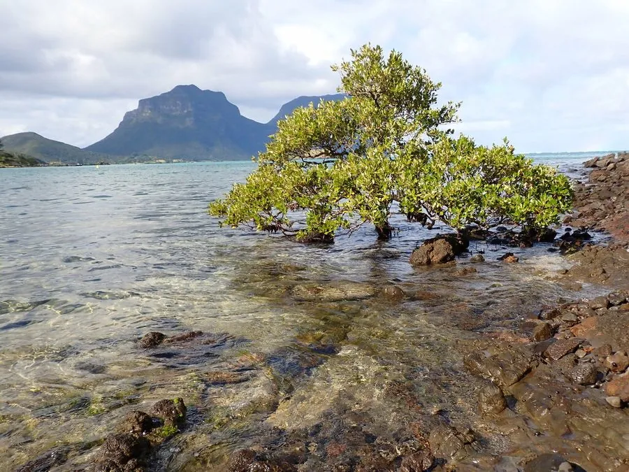

水生植物 · 植物界
白骨壤 Avicennia marina

爵床科海榄雌属常绿灌木或小乔木，红树林先锋树种，叶背灰白、具呼吸根，分布广泛，是红树林生态系统的关键物种。
- 分类
- 门被子植物门纲木兰纲目唇形目科爵床科属海榄雌属
- 栖息环境
- 热带、亚热带海岸潮间带泥滩，耐盐、耐淹
- 地理分布
- 非洲东部、亚洲南部至澳大利亚北部，中国华南沿海常见
- 保护级别
- 暂无评估
物种志
白骨壤为爵床科海榄雌属的常绿灌木或小乔木，高 2–8 米，树皮灰白色，多分枝。叶片对生，革质，卵形或椭圆形，长 3–8 厘米，表面绿色，背面密生灰白色绒毛。花小，黄绿色，聚伞花序，花期 4–8 月；果实为蒴果，扁球形，种子胎生。根系发达，具指状呼吸根，露出泥面。
白骨壤广泛分布于热带、亚热带海岸的潮间带泥滩，从非洲东部、亚洲南部到澳大利亚北部都有分布，中国海南、广东、广西、福建等地常见。它是红树林的先锋树种，耐盐、耐淹、耐瘠薄，呼吸根能帮助其在缺氧的淤泥中呼吸。白骨壤能固滩护岸、削弱风浪，为鱼虾和鸟类提供栖息地；树皮可提取栲胶，叶可作饲料。栽培以胎生苗繁殖为主，需在潮间带种植，并加强红树林保护。
形态与习性
- 株高2–8 米，树皮灰白色
- 叶片卵形，叶背密生灰白色绒毛
- 花期4–8 月，花小、黄绿色
- 根系具指状呼吸根，露出泥面
- 耐盐耐盐、耐淹、耐瘠薄
- 繁殖胎生苗繁殖
- 生态红树林先锋树种，固滩护岸
- 主要用途护岸、栲胶原料、饲料
趣味知识
- 白骨壤的指状呼吸根露出泥面，帮助它在缺氧的淤泥中呼吸。
- 它是红树林的先锋树种，耐盐耐淹，能固滩护岸。
- 白骨壤的叶背密生灰白色绒毛，因此得名。